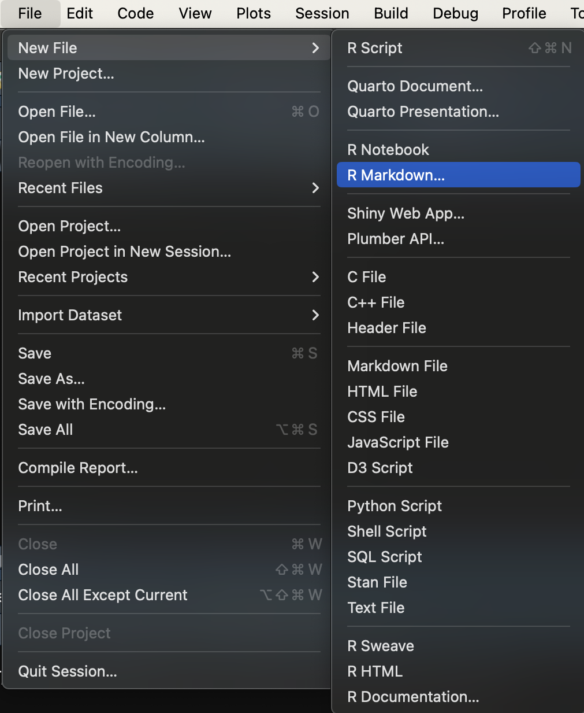
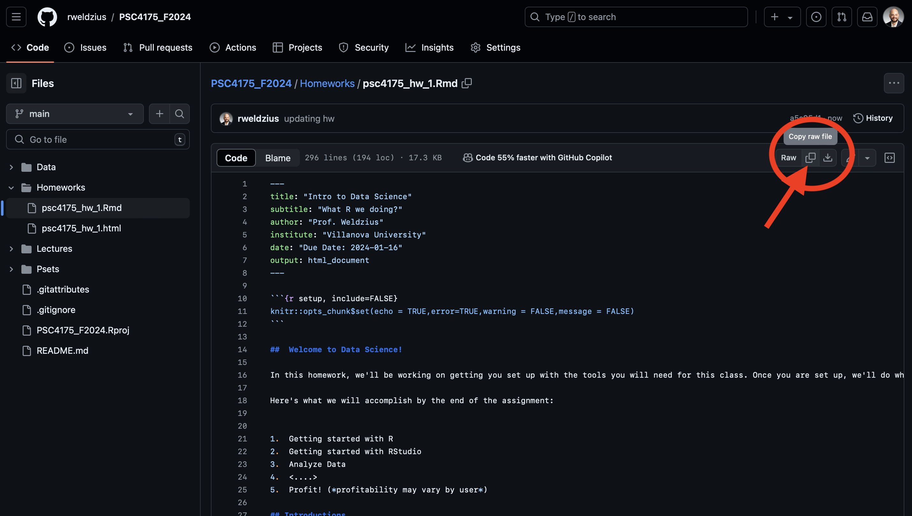

Welcome to Data Science!
In this homework, we’ll be working on getting you set up with the tools you will need for this class. Once you are set up, we’ll do what we’re here to do: analyze data!
Here’s what we will accomplish by the end of the assignment:
- Getting started with R
- Getting started with RStudio
- Analyze Data
- <….>
- Profit! (profitability may vary by user)
Introductions
We need two basic sets of tools for this class. We will need R to analyze data. We will need RStudio to help us interface with R and to produce documentation of our results.
Installing R
R is going to be the only programming language we will use. R is an extensible statistical programming environment that can handle all of the main tasks that we’ll need to cover this semester: getting data, analyzing data and communicating data analysis.
If you haven’t already, you need to download R here: https://cran.r-project.org/.
Installing RStudio
When we work with R, we communicate via the command line. To help automate this process, we can write scripts, which contain all of the commands to be executed. These scripts generate various kinds of output, like numbers on the screen, graphics or reports in common formats (pdf, word). Most programming languages have several I ntegrated D evelopment E nvironments (IDEs) that encompass all of these elements (scripts, command line interface, output). The primary IDE for R is RStudio.
If you haven’t already, you need to download RStudio here: https://rstudio.com/products/rstudio/download/. You need the free RStudio desktop version.
Accessing Files and Using Directories
In each class, we’re going to include some code and text in one file, and data in another file. You’ll need to download both of these files to your computer. You need to have a particular place to put these files. Computers are organized using named directories (sometimes called folders). Don’t just put the files in your Downloads directory. One common solution is to created a directory on your computer named after the class: psc_4175. Each time you access the files, you’ll want to place them in that directory.
Yes We Code! Running R Code
We’re going to grab some data that’s part of the college scorecard and do a bit of analysis on it.
.Rmd Set Up
Open RStudio, then create a new .Rmd file. To do this, click on File → New File → R Markdown....

You will then be asked to determine a bunch of settings for this .Rmd document. For example, you can choose whether you want to create a “Document”, “Presentation”, “Shiny”, or “From Template” on the left. You can set the “Title:” “Author:” and “Date:” on the top-right. And you can choose the “Default Output Format:” to be either “HTML”, “PDF”, or “Word”. You should not change any of these settings. Their defaults (“Document”, “Untitled”, “[Your name]”, “[Today’s Date]”, and “HTML”) are sufficient. Just click “OK”.

Copy the raw code from the psc4175_hw_1.Rmd file by clicking on the copy button as shown in the image below.

Finally, replace the default code in your R Markdown file with the copied code from the GitHub!
If viewing this as an html file, you can view this gif for more help!

Helpful tip! You can also simply download the .Rmd file for the homeworks/problem sets and work directly from them. Just be sure you save it to your preferred folder on your computer system!
.Rmd Files
.Rmd files will be the only file format we work in this class. .Rmd files contain three basic elements:
- Script that can be interpreted by R.
- Output generated by R, including tables and figures.
- Text that can be read by humans.
From an .Rmd file you can generate html documents, pdf documents, word documents, slides . . . lots of stuff. All class notes will be in .Rmd. All assignments will be completed on .Rmd files.
In the .Rmd file you’ll notice that there are three open single quotes in a row, like so: ``` This indicates the start of a “code chunk” in our file. The first code chunk that we load will include a set of programs that we will need all semester long.
These .Rmd files are great, but the reader (you and me) cannot easily see all of the output. You are in effect writing the code that Microsoft Word does behind the scenes. In order to see the nice output we need to “knit” the .Rmd file. At the top of RStudio, you’ll see a “Knit” button with a drop down arrow. If you click “Knit” the .Rmd will transform into an .html file and automatically save in the same directory as your .Rmd file. If you receive an error in the console, you’ll need to go back and check where that error occurred (this will be frustrating at first, but you’ll soon find mistakes quite quickly!). I find it easier to “knit” your .Rmd file as a PDF as this is the file you will submit for all of your assignments.
To “knit” your .Rmd as a PDF follow these steps:
Select the “Knit” drop-down icon at the top of the RStudio window, and select “Knit to PDF”. RStudio will ask you to first save the markdown file, then it will process the markdown file and render it to PDF.
If this worked, you’re good to go! You can ignore the next section here. If it didn’t work, then proceed with the next steps
Install the tinytex package by typing this code into the command console of RStudio:
# install.packages("tinytex") # Uncomment this to install
Then, once that has installed successfully, type the following:
# tinytex::install_tinytex() # Uncomment this to install
Remember, once these are loaded, you do not need to install them every time; they are saved in your library!
Now, go back and “Knit to PDF”. If you’re still having problems, let me know in Campuswire.
Outputting results
I like to see results in the Console. By default Rstudio will output results from an Rmd file inline– meaning in the document itself. To change this, go to Tools–>global Options–>R Markdown, and uncheck the box for “show output inline for all Rmarkdown documents.”
Using R Libraries
When we say that R is extensible, we mean that people in the community can write programs that everyone else can use. These are called “packages.” In these first few lines of code, I load a set of packages using the library command in R. The set of packages, called tidyverse were written by Hadley Wickham and others and play a key role in his book. To install this set of packages, simply type in install.packages("tidyverse") at the R command prompt. Alternatively, you can use the “Packages” pane in the lower right hand corner of your Rstudio screen. Click on Packages, then click on install, then type in “tidyverse.”
To run the code below in R, you can:
- Press the “play” button next to the code chunk
- In OS X, place the cursor in the code chunk and hit
CMD+RETURN
- In Windows, place the cursor in the code chunk and hit
CTRL+RETURN
## Get necessary libraries-- won't work the first time, because you need to install them!
# install.packages("tidyverse") # Uncomment this to install
library(tidyverse)
Here’s the thing about packages. There’s a difference between installing a package and calling a package. Installing means that the package is on your computer and available to use. Calling a package means that the commands in the package will be used in this session. A “session” is basically when R has been opened up on your computer. As long as R/Rstudio are open and running, the session is active.
It’s a good practice to shutdown R/Rstudio once you’re no longer working on it, and then to restart it when you begin working again. Otherwise, the working environment can get pretty crowded with data and packages.
Loading Datasets
Now we’re ready to load in data. The data frame will be our basic way of interacting with everything in this class. The sc_debt.Rds (found here:
https://github.com/rweldzius/PSC4175_SUM2025/blob/main/Data/sc_debt.Rds) data frame contains information from the college scorecard on different colleges and universities.
tidyverse includes a read_rds() function that can read data directly from the internet.
df <- read_rds('https://github.com/rweldzius/PSC4175_SUM2025/raw/main/Data/sc_debt.Rds')
You’ll notice that the code above starts with df. This is just an arbitrary name for an object. You could name it dat or raw or debt or whatever you want. Then there’s an arrow <-. This is an assignment operator. Then there’s a function, readRDS, with parentheses, and an argument “sc_debt.Rds”. Here’s how to think about this.
- Functions in R always have arguments within parentheses. This function.
readRDS opens a type of data– rds data. This function has one argument which is the name of the file I want to open.
- Assignment operators take the result of a function and assign it to an object name.
- Objects in R store information locally so that it can be accessed again.
So the command above says “use readRDS to open the file”sc_debt.Rds” and assign the result to the object df.
Let’s take a quick look at the object df
df
## # A tibble: 2,546 × 16
## unitid instnm stabbr grad_debt_mdn control region preddeg openadmp adm_rate
## <int> <chr> <chr> <int> <chr> <chr> <chr> <int> <dbl>
## 1 100654 Alabama… AL 33375 Public South… Bachel… 2 0.918
## 2 100663 Univers… AL 22500 Public South… Bachel… 2 0.737
## 3 100690 Amridge… AL 27334 Private South… Associ… 1 NA
## 4 100706 Univers… AL 21607 Public South… Bachel… 2 0.826
## 5 100724 Alabama… AL 32000 Public South… Bachel… 2 0.969
## 6 100751 The Uni… AL 23250 Public South… Bachel… 2 0.827
## 7 100760 Central… AL 12500 Public South… Associ… 1 NA
## 8 100812 Athens … AL 19500 Public South… Bachel… NA NA
## 9 100830 Auburn … AL 24826 Public South… Bachel… 2 0.904
## 10 100858 Auburn … AL 21281 Public South… Bachel… 2 0.807
## # ℹ 2,536 more rows
## # ℹ 7 more variables: ccbasic <int>, sat_avg <int>, md_earn_wne_p6 <int>,
## # ugds <int>, costt4_a <int>, selective <dbl>, research_u <dbl>
This is just the first part of the data frame. All data frames have the exact same structure. Each row is a case. In this example, each row is a college. Each column is a characteristics of the case, what we call a variable. Let’s use the names command to see what variables are in the dataset.
names(df)
## [1] "unitid" "instnm" "stabbr" "grad_debt_mdn"
## [5] "control" "region" "preddeg" "openadmp"
## [9] "adm_rate" "ccbasic" "sat_avg" "md_earn_wne_p6"
## [13] "ugds" "costt4_a" "selective" "research_u"
It’s hard to know what these mean without some more information. We usually use a codebook to get more information about a dataset. Because we use very short names for variables, it’s useful to have some more information (fancy name: metadata) that tells us about those variables. Below you’ll see the R name for each variable next to a description of each variable.
| unitid |
Unit ID |
| instnm |
Institution Name |
| stabbr |
State Abbreviation |
| grad_debt_mdn |
Median Debt of Graduates |
| control |
Control Public or Private |
| region |
Census Region |
| preddeg |
Predominant Degree Offered: Associates or Bachelors |
| openadmp |
Open Admissions Policy: 1= Yes, 2=No,3=No 1st time students |
| adm_rate |
Admissions Rate: proportion of applications accepted |
| ccbasic |
Type of institution– see here |
| selective |
Institution admits fewer than 10 % of applicants, 1=Yes, 0=No |
| research_u |
Institution is a research university 1=Yes, 0=No |
| sat_avg |
Average Sat Scores |
| md_earn_wne_p6 |
Average Earnings of Recent Graduates |
| ugds |
Number of undergraduates |
| costt4a |
Average cost of attendance (tuition-grants) |
Looking at datasets
We can also look at the whole dataset using View. Just delete the # sign below to make the code work. That # sign is a comment in R code, which indicates to the computer that everything on that line should be ignored. To get it to run, we need to drop the #.
#View(df)
You’ll notice that this data is arranged in a rectangular format, with each row showing a different college, and each column representing a different characteristic of that college. Datasets are always structured this way— cases (or units) will form the rows, and the characteristics of those cases– or variables— will form the columns. Unlike working with spreadsheets, this structure is always assumed for datasets.
Filter, Select, Arrange
In exploring data, many times we want to look at smaller parts of the dataset. There are three commands we’ll use today that help with this.
-filter selects only those cases or rows that meet some logical criteria.
-select selects only those variables or columns that meet some criteria
-arrange arranges the rows of a dataset in the way we want.
For more on these, please see this vignette.
Let’s grab just the data for Villanova, then look only at the average test scores and admit rate. We can use filter to look at all of the variables for Villanova:
df%>%
filter(instnm=="Villanova University")
## # A tibble: 1 × 16
## unitid instnm stabbr grad_debt_mdn control region preddeg openadmp adm_rate
## <int> <chr> <chr> <int> <chr> <chr> <chr> <int> <dbl>
## 1 216597 Villanov… PA 26000 Private North… Bachel… 2 0.282
## # ℹ 7 more variables: ccbasic <int>, sat_avg <int>, md_earn_wne_p6 <int>,
## # ugds <int>, costt4_a <int>, selective <dbl>, research_u <dbl>
What’s that weird looking %>% thing? That’s called a pipe. This is how we chain commands together in R. Think of it as saying “and then” to R. In the above case, we said, take the data and then filter it to be just the data where the institution name is Vanderbilt University.
The command above says the following:
Take the dataframe df and then filter it to just those cases where instnm is equal to “Villanova University.” Notice the “double equals” sign, that’s a logical operator asking if instnm is equal to “Villanova University.”
Many times, though we don’t want to see everything, we just want to choose a few variables. select allows us to select only the variables we want. In this case, the institution name, its admit rate, and the average SAT scores of entering students.
df%>%
filter(instnm=="Villanova University")%>%
select(instnm,adm_rate,sat_avg)
## # A tibble: 1 × 3
## instnm adm_rate sat_avg
## <chr> <dbl> <int>
## 1 Villanova University 0.282 1422
filter takes logical tests as its argument. The code insntnm=="Villanova University" is a logical statement that will be true of just one case in the dataset– when institution name is Vanderbilt University. The == is a logical test, asking if this is equal to that. Other common logical and relational operators for R include
>, <: greater than, less than>=, <=: greater than or equal to, less than or equal to! :not, as in != not equal to& AND| OR
Next, we can use filter to look at colleges with low admissions rates, say less than 10% ( or .1 in the proportion scale used in the dataset).
df%>%
filter(adm_rate<.1)%>%
select(instnm,adm_rate,sat_avg)%>%
arrange(sat_avg,adm_rate)%>%
print(n=20)
## # A tibble: 25 × 3
## instnm adm_rate sat_avg
## <chr> <dbl> <int>
## 1 Colby College 0.0967 1456
## 2 Swarthmore College 0.0893 1469
## 3 Pomona College 0.074 1480
## 4 Dartmouth College 0.0793 1500
## 5 Stanford University 0.0434 1503
## 6 Northwestern University 0.0905 1506
## 7 Columbia University in the City of New York 0.0545 1511
## 8 Brown University 0.0707 1511
## 9 University of Pennsylvania 0.0766 1511
## 10 Vanderbilt University 0.0912 1515
## 11 Harvard University 0.0464 1517
## 12 Princeton University 0.0578 1517
## 13 Yale University 0.0608 1517
## 14 Rice University 0.0872 1520
## 15 Duke University 0.076 1522
## 16 University of Chicago 0.0617 1528
## 17 Massachusetts Institute of Technology 0.067 1547
## 18 California Institute of Technology 0.0642 1557
## 19 Saint Elizabeth College of Nursing 0 NA
## 20 Yeshivat Hechal Shemuel 0 NA
## # ℹ 5 more rows
Now let’s look at colleges with low admit rates, and order them using arrange by SAT scores (-sat_avg gives descending order).
df%>%
filter(adm_rate<.1)%>%
select(instnm,adm_rate,sat_avg)%>%
arrange(-sat_avg)
## # A tibble: 25 × 3
## instnm adm_rate sat_avg
## <chr> <dbl> <int>
## 1 California Institute of Technology 0.0642 1557
## 2 Massachusetts Institute of Technology 0.067 1547
## 3 University of Chicago 0.0617 1528
## 4 Duke University 0.076 1522
## 5 Rice University 0.0872 1520
## 6 Yale University 0.0608 1517
## 7 Harvard University 0.0464 1517
## 8 Princeton University 0.0578 1517
## 9 Vanderbilt University 0.0912 1515
## 10 Columbia University in the City of New York 0.0545 1511
## # ℹ 15 more rows
And one last operation: all colleges that admit between 20 and 30 percent of students, looking at their SAT scores, earnings of attendees six years letter, and what state they are in, then arranging by state, and then SAT score.
df%>%
filter(adm_rate>.2&adm_rate<.3)%>%
select(instnm,sat_avg,md_earn_wne_p6,stabbr)%>%
arrange(stabbr,-sat_avg)%>%
print(n=40)
## # A tibble: 37 × 4
## instnm sat_avg md_earn_wne_p6 stabbr
## <chr> <int> <int> <chr>
## 1 Heritage Christian University NA NA AL
## 2 University of California-Santa Barbara 1370 39000 CA
## 3 California Polytechnic State University-San Lu… 1342 52100 CA
## 4 University of California-Irvine 1306 41100 CA
## 5 California Institute of the Arts NA 26900 CA
## 6 University of Miami 1371 47500 FL
## 7 Georgia Institute of Technology-Main Campus 1418 65500 GA
## 8 Point University 986 27300 GA
## 9 Grinnell College 1457 32800 IA
## 10 St Luke's College NA 45300 IA
## 11 Purdue University Northwest 1074 NA IN
## 12 Alice Lloyd College 1040 25300 KY
## 13 Wellesley College 1452 44900 MA
## 14 Boston College 1437 57000 MA
## 15 Brandeis University 1434 41700 MA
## 16 Babson College 1362 70400 MA
## 17 Laboure College NA 52000 MA
## 18 Coppin State University 903 28500 MD
## 19 University of Michigan-Ann Arbor 1448 49800 MI
## 20 University of North Carolina at Chapel Hill 1402 41000 NC
## 21 University of North Carolina School of the Arts 1202 23800 NC
## 22 Cabarrus College of Health Sciences 1063 41600 NC
## 23 Carolina University 979 NA NC
## 24 Wake Forest University NA 51100 NC
## 25 Webb Institute 1465 NA NY
## 26 Vassar College 1452 36100 NY
## 27 Colgate University 1437 47700 NY
## 28 University of Rochester 1418 44800 NY
## 29 Case Western Reserve University 1436 59600 OH
## 30 Denison University 1328 38900 OH
## 31 Kettering College 1135 48800 OH
## 32 Art Academy of Cincinnati 958 22400 OH
## 33 Villanova University 1422 62600 PA
## 34 Rhode Island School of Design 1349 40300 RI
## 35 Trinity University 1381 45700 TX
## 36 University of Virginia-Main Campus 1436 50300 VA
## 37 University of Richmond 1395 46900 VA
Quick Exercise Choose a different college and two different things about that college. Have R print the output.
# INSERT CODE HERE
Summarizing Data
To summarize data, we use the summarize command. Inside that command, we tell R two things: what to call the new variable that we’re creating, and what numerical summary we would like. The code below summarizes median debt for the colleges in the dataset by calculating the average of median debt for all institutions.
df%>%
summarize(mean_debt=mean(grad_debt_mdn,na.rm=TRUE))
## # A tibble: 1 × 1
## mean_debt
## <dbl>
## 1 19646.
df%>%
summarize(median_debt=median(grad_debt_mdn,na.rm=TRUE))
## # A tibble: 1 × 1
## median_debt
## <int>
## 1 21500
Quick Exercise Summarize the average entering SAT scores in this dataset.
# INSERT CODE HERE
Combining Commands
We can also combine commands, so that summaries are done on only a part of the dataset. Below, we summarize median debt for selective schools, and not very selective schools.
df%>%
filter(adm_rate<.1)%>%
summarize(mean_debt=mean(grad_debt_mdn,na.rm=TRUE))
## # A tibble: 1 × 1
## mean_debt
## <dbl>
## 1 16178.
What about for not very selective schools?
df%>%
filter(adm_rate>.3)%>%
summarize(mean_debt=mean(grad_debt_mdn,na.rm=TRUE))
## # A tibble: 1 × 1
## mean_debt
## <dbl>
## 1 23230.
Quick Exercise Calculate average earnings for schools where SAT>1200
# INSERT CODE HERE
Quick Exercise Calculate the average debt for schools that admit over 50% of the students who apply.
# INSERT CODE HERE